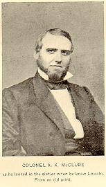

| Alexander Kelly McClure actively participated in state and national politics through his lifetime. Before the war, he served as a state senator. McClure supported Abraham Lincoln in the presidential election of 1860 and served as the head of the Republican State Committee. An opponent of slavery and a critic of Democratic corruption, McClure broadcast his views through his ownership and editorship of a Franklin County newspaper. During the war, McClure continued in his support of the Lincoln administration and Republican policies, despite his feud with Simon Cameron. After the war, McClure favored the Radical Republican pursuit of black civil rights. McClure did not envision a similar place for Indians in the reunited nation, advocating their forced relocation. |
|
the most likely match in the Valley of the Shadow databases: |
McClure Household: 1860 Census
The prewar letters of Alexander K. McClure demonstrate his passion for politics. McClure regularly discussed local, state, and national politics in his correspondence, as well as his support and distaste for several politicians. McClure actively supported Lincoln's candidacy for president, and later attempted to influence the makeup of Lincoln's cabinet. Most of the letters were addressed to Eli Slifer, who served as Secretary of the Commonwealth under Governor Andrew Gregg Curtin. McClure also wrote to Thaddeus Stevens, often about their shared hope that Simon Cameron would not be appointed to Lincoln's cabinet.
Note: The files here represent the best transcription work available at the time of the Valley of the Shadow project's completion. More extensive transcriptions, including color page images, are available from Dickinson College's Their Own Words project. Click here to access the Alexander McClure portion of that project.
Approximately 69 letters written by or concerning Alexander K. McClure are included in the Abraham Lincoln Papers at the Library of Congress. In his prewar letters, McClure affirmed his support for Lincoln's campaign for the presidency. He kept Lincoln informed of his election chances in Pennsylvania and other political developments. Clicking the above link will take you out of the Valley of the Shadow. To access McClure's letters, search by keyword and enter "A% K% McClure" as your search criteria.
Return to the Eve of War Personal Papers
Alexander McClure remained in Franklin County for the majority of the war, continuing his political activity. The majority of these wartime letters were addressed to Eli Slifer, who served as Secretary of the Commonwealth in Pennsylvania under Governor Andrew Gregg Curtin. Other correspondents of McClure's during the war included Thaddeus Stevens, Andrew Curtin, and Abraham Lincoln.
Note: The files here represent the best transcription work available at the time of the Valley of the Shadow project's completion. More extensive transcriptions, including color page images, are available from Dickinson College's Their Own Words project. Click here to access the Alexander McClure portion of that project.
Approximately 69 letters written by or concerning Alexander K. McClure are included in the Abraham Lincoln Papers at the Library of Congress. McClure's wartime letters to President Lincoln discussed McClure's rivalry with Simon Cameron, Lincoln's re-election campaign, and other political matters in Pennsylvania and the nation. Clicking the above link will take you out of the Valley of the Shadow. To access McClure's letters, search by keyword and enter "A% K% McClure" as your search criteria.
Return to the War Years Personal Papers
Alexander McClure continued to be politically active in the years after the war, and these four postwar letters are almost entirely about politics. Half of these postwar letters were addressed to Eli Slifer, who served as Secretary of the Commonwealth under Governor Andrew Gregg Curtin.
Note: The files here represent the best transcription work available at the time of the Valley of the Shadow project's completion. More extensive transcriptions, including color page images, are available from Dickinson College's Their Own Words project. Click here to access the Alexander McClure portion of that project.
Return to the Aftermath Personal Papers